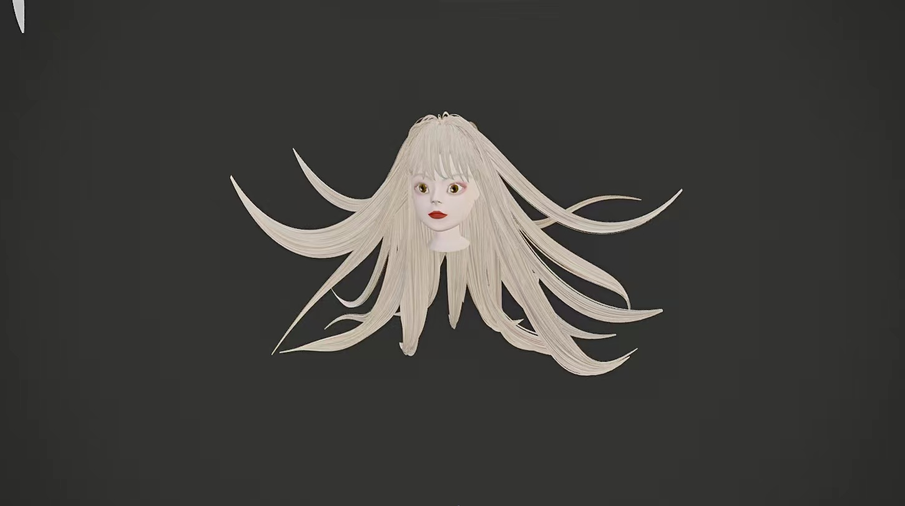
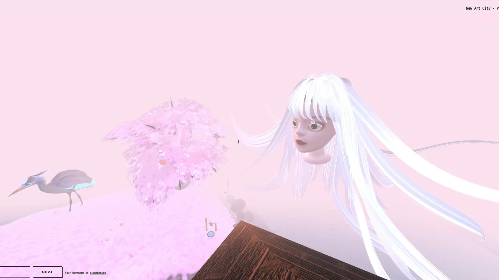
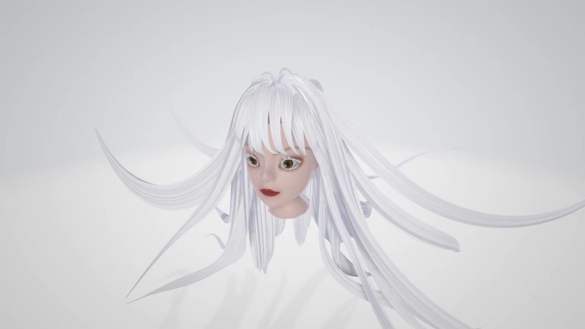
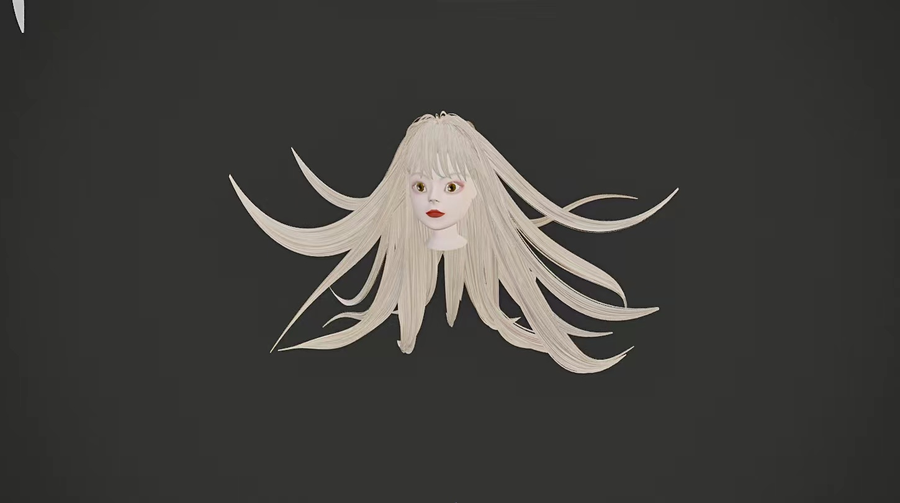
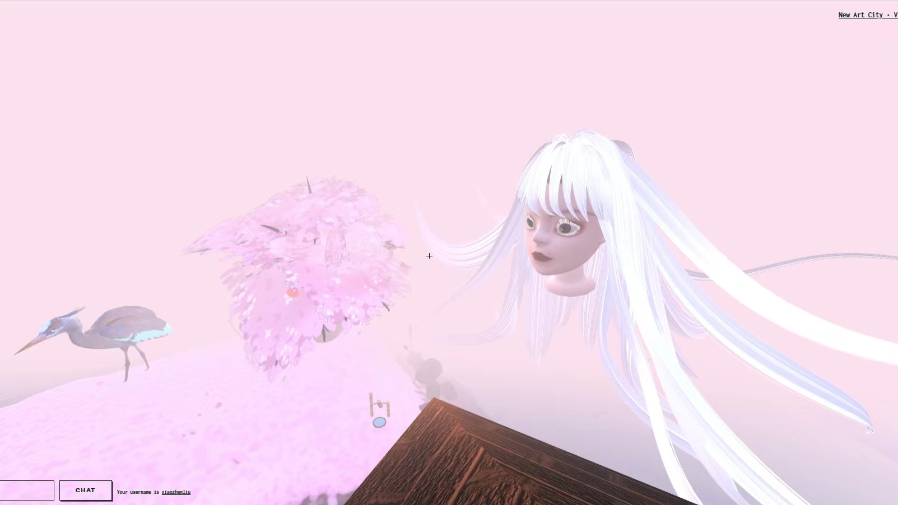
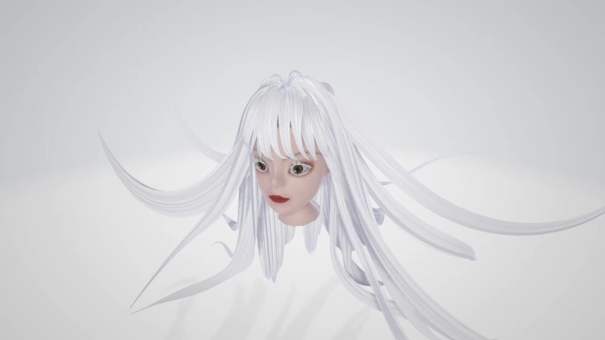

I have always been very interested in Japanese traditional culture.
Including folk legends, ancient buildings such as Torii, Kabuki,
Japanese Ukiyo-e style, and modern Japanese anime. For the graduate
exhibition project, I decided to show my love for this culture through
blender modeling in the form of character design by Blender. The
character prototype comes from Japanese painters and related documents
during the Edo period. Online exhibitions require a closed exhibition
area with Japanese-related Ukiyo-e on the surrounding walls. Although
I know that the monsters are not real, I am still curious about the
story behind the monsters. Many monsters are derived from people's
feelings. So, I think this is also the reason for their fascinating
existence. I think the most special thing about people is their rich
feelings. The monsters have evolved because of people's desire, greed,
love, and sadness. Monsters are not bad, on the contrary, they can
reflect the bad situation that people were out of at the time or can
represent many people. And the appearance of a monster is derived from
people's imagination, and people's emotions are also determined by the
appearance of a monster. Many Japanese painters have painted ukiyo-e
of yokai. I love the look of different yokai in the painting, as well
as the rich colors and unique ukiyo-e style. I will use Mozilla Hubs
as the platform to present my personal gallery and my models. Monsters
were a supernatural existence for people at that time. But with the
continuous advancement of technology, fewer and fewer people will
believe or be curious about their existence. I hope he will not
gradually disappear from people's sight, because monsters are also a
very interesting culture. I know that my current artwork is not so
mature, or there are many areas for improvement. But I will continue
to learn and make my work more successful and attractive. I am happy
to share my artwork with you!
Artist Bio
Xiaozhen Liu was born in Shandong, China in 1999. She currently
resides in the US. She received her BFA in 2021. She will complete her
BFA degree in Digital Media Art at San José State University in Fall
2021. Her work has been presented in San Jose Group Show 2020, Virtual
Institute of Simulacra Art. She works in the mediums of 3D modeling,
video editing and Digital painting. She works in the mediums of 3D
modeling, video editing and Digital painting. She loves Japanese
horror animate art style, and surreal style. She has been working at
Inspur as an intern who doing photo editing from 2D photos to 3D
stereo panorama.
 




